Plot bootstrap confidence intervals
plots.confints.bootpls.RdThis function plots the confidence intervals derived using the function confints.bootpls from from a bootpls based object.
plots.confints.bootpls(ic_bootobject, indices = NULL, legendpos = "topleft", prednames = TRUE, articlestyle = TRUE, xaxisticks=TRUE, ltyIC=c(2, 4, 5, 1), colIC=c("darkgreen", "blue", "red", "black"), typeIC, las = par("las"), mar, mgp, ...)
Arguments
| ic_bootobject | an object created with the |
|---|---|
| indices | vector of indices of the variables to plot. Defaults to |
| legendpos | position of the legend as in |
| prednames | do the original names of the predictors shall be plotted ? Defaults to |
| articlestyle | do the extra blank zones of the margin shall be removed from the plot ? Defaults to |
| xaxisticks | do ticks for the x axis shall be plotted ? Defaults to |
| ltyIC | lty as in |
| colIC | col as in |
| typeIC | type of CI to plot. Defaults to |
| las | numeric in 0,1,2,3; the style of axis labels. 0: always parallel to the axis [default], 1: always horizontal, 2: always perpendicular to the axis, 3: always vertical. |
| mar | A numerical vector of the form |
| mgp | The margin line (in mex units) for the axis title, axis labels and axis line. Note that |
| … | further options to pass to the |
Value
NULL
See also
Examples
#> ____************************************************____ #> ____Component____ 1 ____ #> ____Component____ 2 ____ #> ____Component____ 3 ____ #> ____Predicting X without NA neither in X nor in Y____ #> ****________________________________________________**** #># Lazraq-Cleroux PLS (Y,X) bootstrap set.seed(250) Cornell.bootYX <- bootpls(modpls, R=250, verbose=FALSE) temp.ci <- confints.bootpls(Cornell.bootYX,2:8)#> Warning: extreme order statistics used as endpoints#> Warning: extreme order statistics used as endpoints#> Warning: extreme order statistics used as endpointsplots.confints.bootpls(temp.ci)plots.confints.bootpls(temp.ci,prednames=FALSE)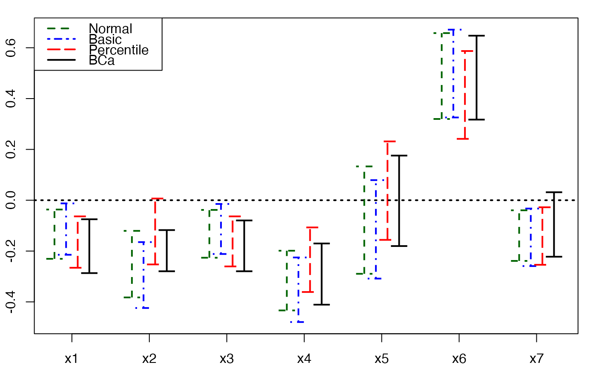plots.confints.bootpls(temp.ci,prednames=FALSE,articlestyle=FALSE, main="Bootstrap confidence intervals for the bj")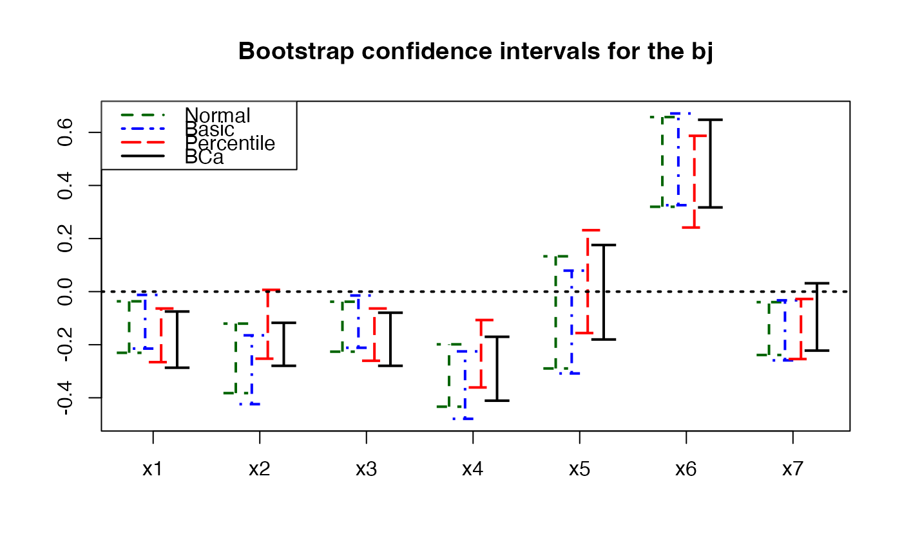plots.confints.bootpls(temp.ci,indices=1:3,prednames=FALSE)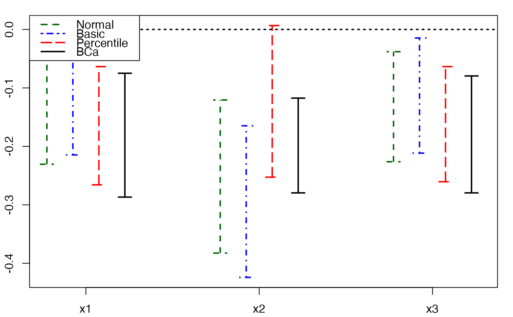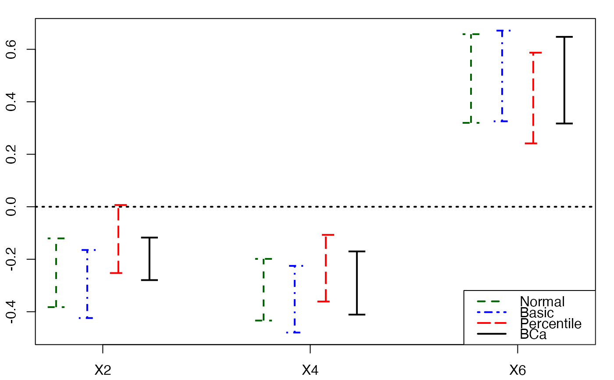plots.confints.bootpls(temp.ci,c(2,4,6),articlestyle=FALSE, main="Bootstrap confidence intervals for some of the bj")#> Warning: zero-length arrow is of indeterminate angle and so skipped#> Warning: zero-length arrow is of indeterminate angle and so skipped#> Warning: zero-length arrow is of indeterminate angle and so skipped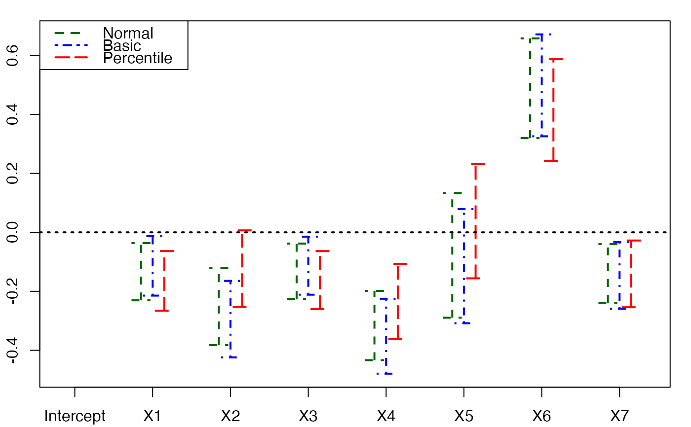plots.confints.bootpls(temp.ci,2:8)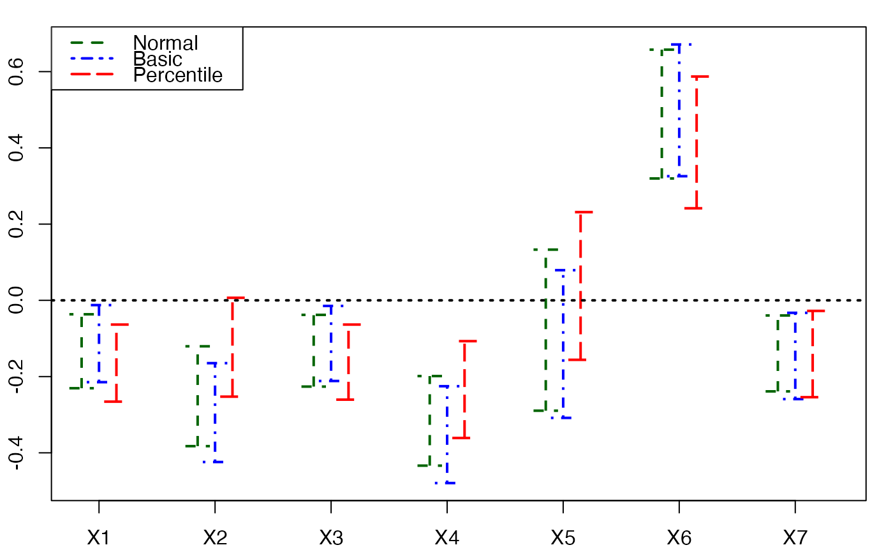plots.confints.bootpls(temp.ci,prednames=FALSE)#> Warning: zero-length arrow is of indeterminate angle and so skipped#> Warning: zero-length arrow is of indeterminate angle and so skipped#> Warning: zero-length arrow is of indeterminate angle and so skipped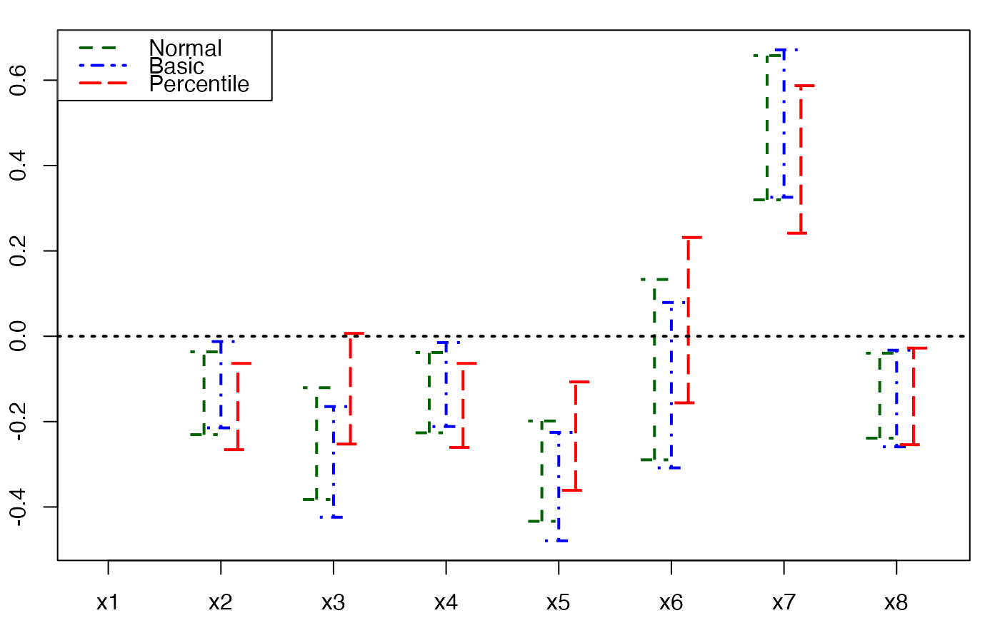# Bastien CSDA 2005 (Y,T) bootstrap Cornell.boot <- bootpls(modpls, typeboot="fmodel_np", R=250, verbose=FALSE) temp.ci <- confints.bootpls(Cornell.boot,2:8) plots.confints.bootpls(temp.ci)plots.confints.bootpls(temp.ci,prednames=FALSE)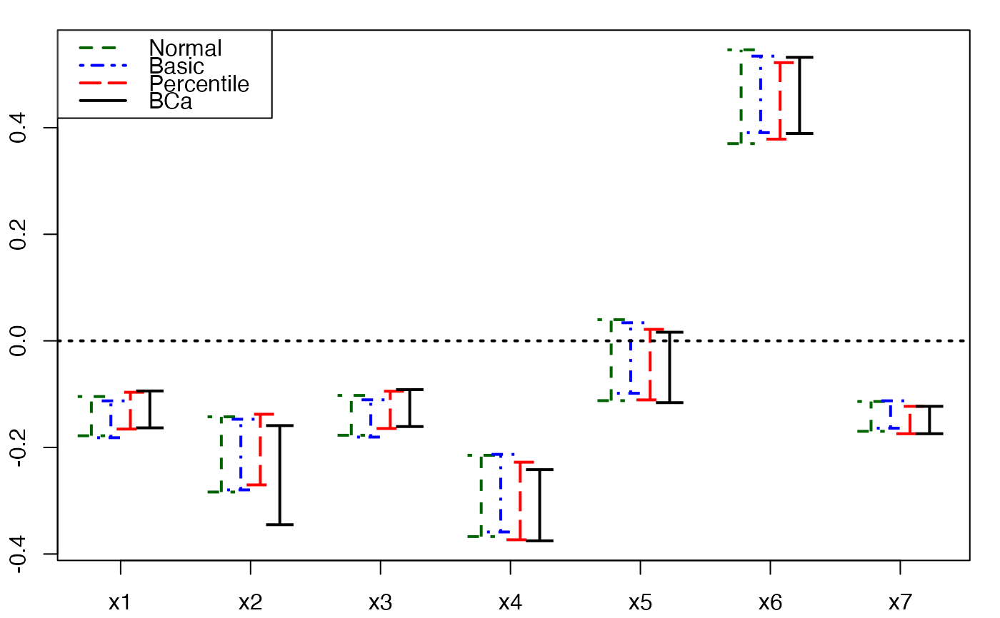plots.confints.bootpls(temp.ci,prednames=FALSE,articlestyle=FALSE, main="Bootstrap confidence intervals for the bj")plots.confints.bootpls(temp.ci,indices=1:3,prednames=FALSE)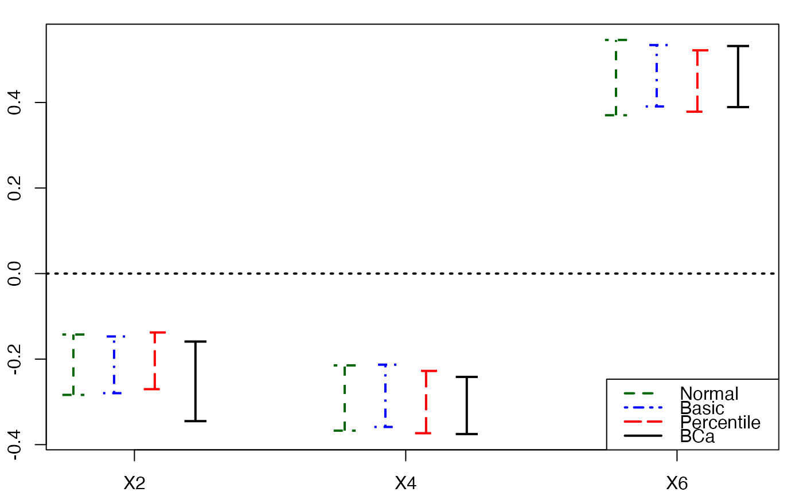plots.confints.bootpls(temp.ci,c(2,4,6),articlestyle=FALSE, main="Bootstrap confidence intervals for some of the bj")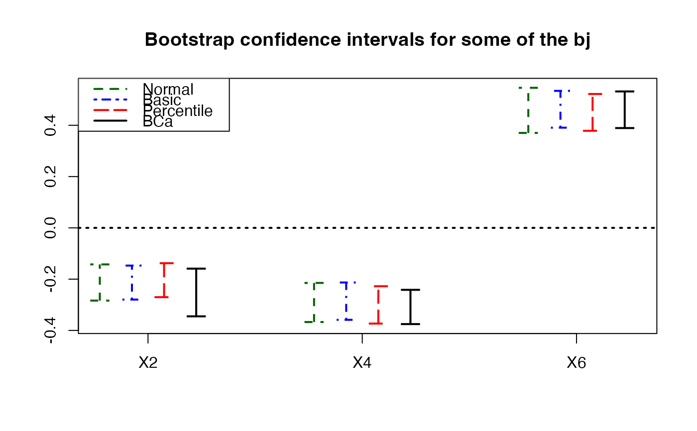#> Warning: zero-length arrow is of indeterminate angle and so skipped#> Warning: zero-length arrow is of indeterminate angle and so skipped#> Warning: zero-length arrow is of indeterminate angle and so skipped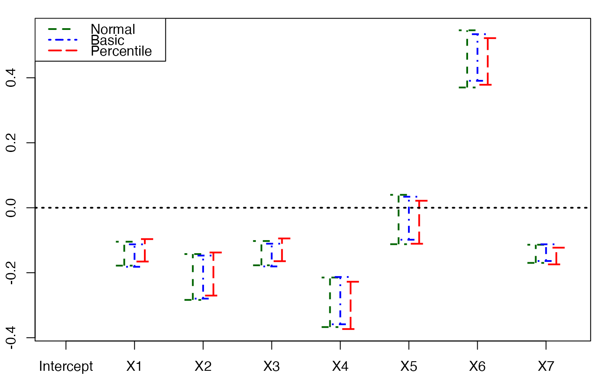plots.confints.bootpls(temp.ci,2:8)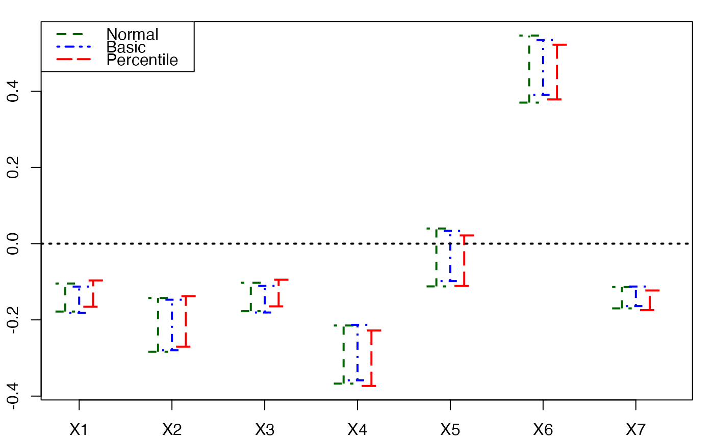plots.confints.bootpls(temp.ci,prednames=FALSE)#> Warning: zero-length arrow is of indeterminate angle and so skipped#> Warning: zero-length arrow is of indeterminate angle and so skipped#> Warning: zero-length arrow is of indeterminate angle and so skipped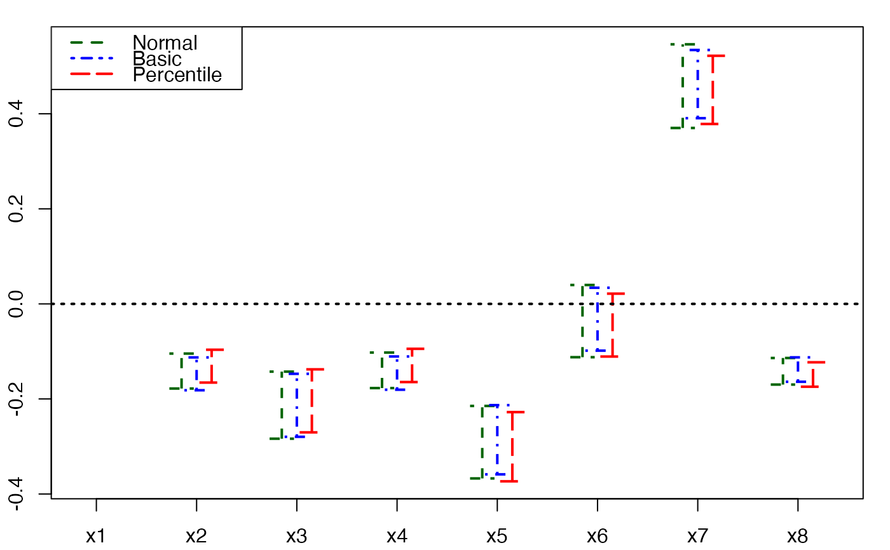#> ____************************************************____ #> #> Family: binomial #> Link function: logit #> #> ____Component____ 1 ____ #> ____Component____ 2 ____ #> ____Component____ 3 ____ #> ____Predicting X without NA neither in X or Y____ #> ****________________________________________________**** #># Lazraq-Cleroux PLS (Y,X) bootstrap # should be run with R=1000 but takes much longer time aze_compl.bootYX3 <- bootplsglm(modplsglm, typeboot="plsmodel", R=250, verbose=FALSE)#> Warning: glm.fit: fitted probabilities numerically 0 or 1 occurred#> Warning: glm.fit: fitted probabilities numerically 0 or 1 occurred#> Warning: glm.fit: fitted probabilities numerically 0 or 1 occurred#> Warning: glm.fit: fitted probabilities numerically 0 or 1 occurred#> Warning: glm.fit: fitted probabilities numerically 0 or 1 occurred#> Warning: glm.fit: fitted probabilities numerically 0 or 1 occurred#> Warning: glm.fit: fitted probabilities numerically 0 or 1 occurred#> Warning: glm.fit: fitted probabilities numerically 0 or 1 occurred#> Warning: glm.fit: fitted probabilities numerically 0 or 1 occurred#> Warning: extreme order statistics used as endpoints#> Warning: extreme order statistics used as endpoints#> Warning: extreme order statistics used as endpoints#> Warning: extreme order statistics used as endpoints#> Warning: extreme order statistics used as endpoints#> Warning: extreme order statistics used as endpoints#> Warning: extreme order statistics used as endpoints#> Warning: extreme order statistics used as endpoints#> Warning: extreme order statistics used as endpointsplots.confints.bootpls(temp.ci)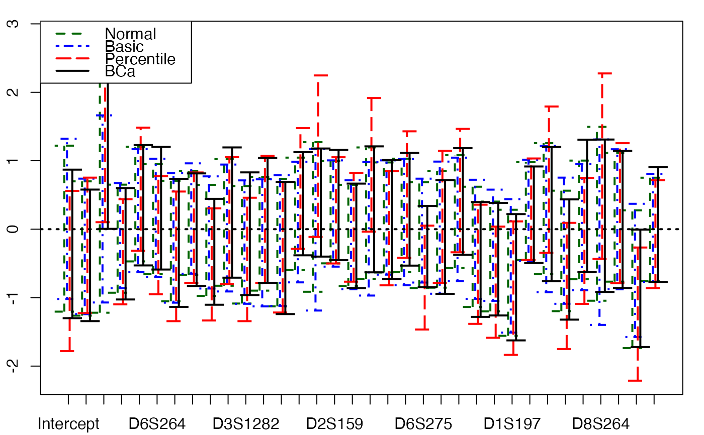plots.confints.bootpls(temp.ci,prednames=FALSE)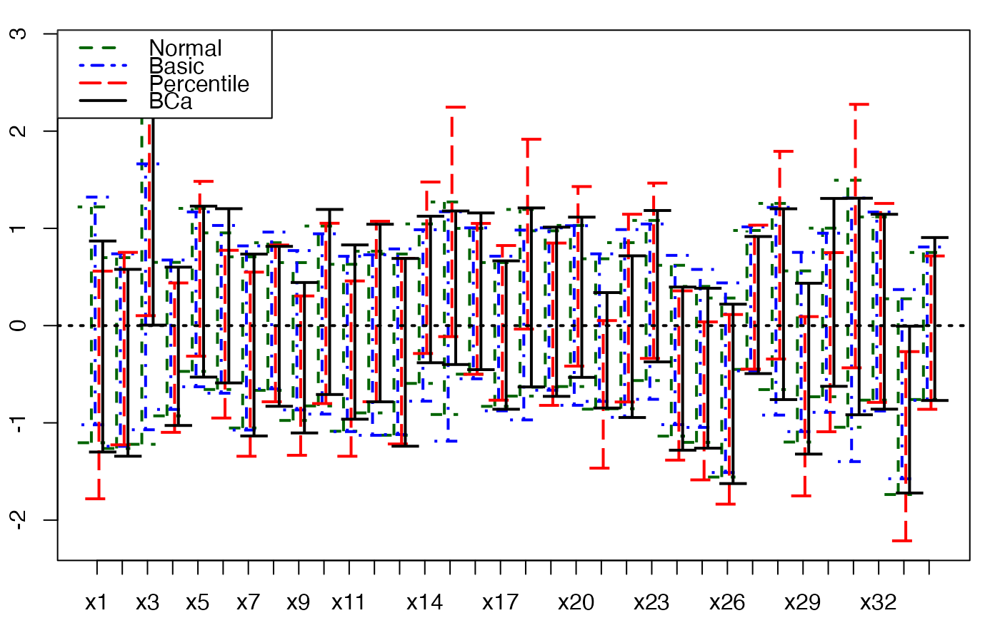plots.confints.bootpls(temp.ci,prednames=FALSE,articlestyle=FALSE, main="Bootstrap confidence intervals for the bj")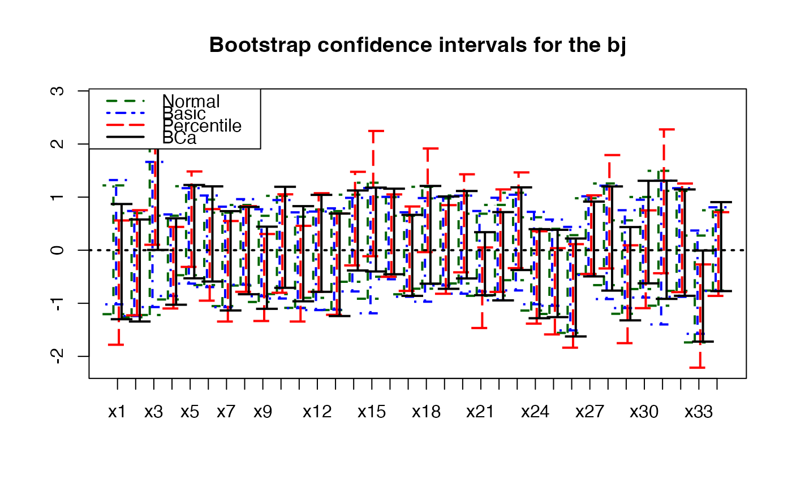plots.confints.bootpls(temp.ci,indices=1:33,prednames=FALSE)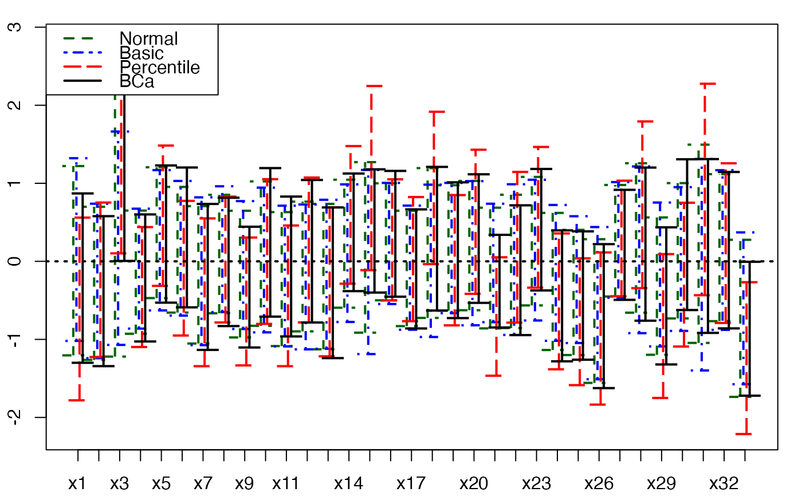plots.confints.bootpls(temp.ci,c(2,4,6),articlestyle=FALSE, main="Bootstrap confidence intervals for some of the bj")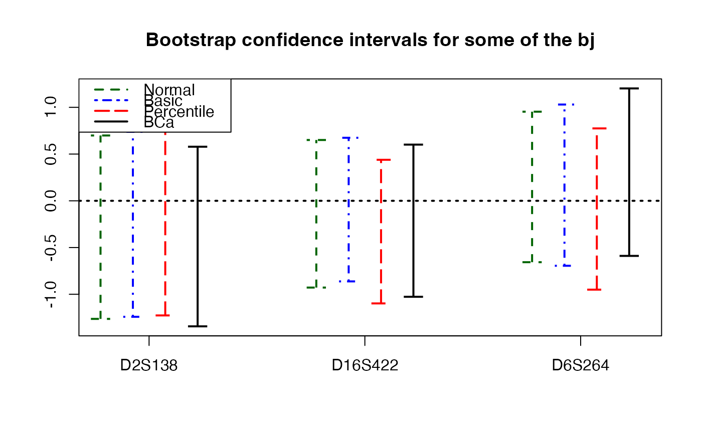plots.confints.bootpls(temp.ci,indices=1:34,prednames=FALSE)temp.ci <- confints.bootpls(aze_compl.bootYX3,1:34,typeBCa=FALSE) plots.confints.bootpls(temp.ci,indices=1:33,prednames=FALSE)# Bastien CSDA 2005 (Y,T) Bootstrap # much faster aze_compl.bootYT3 <- bootplsglm(modplsglm, R=1000, verbose=FALSE) temp.ci <- confints.bootpls(aze_compl.bootYT3) plots.confints.bootpls(temp.ci)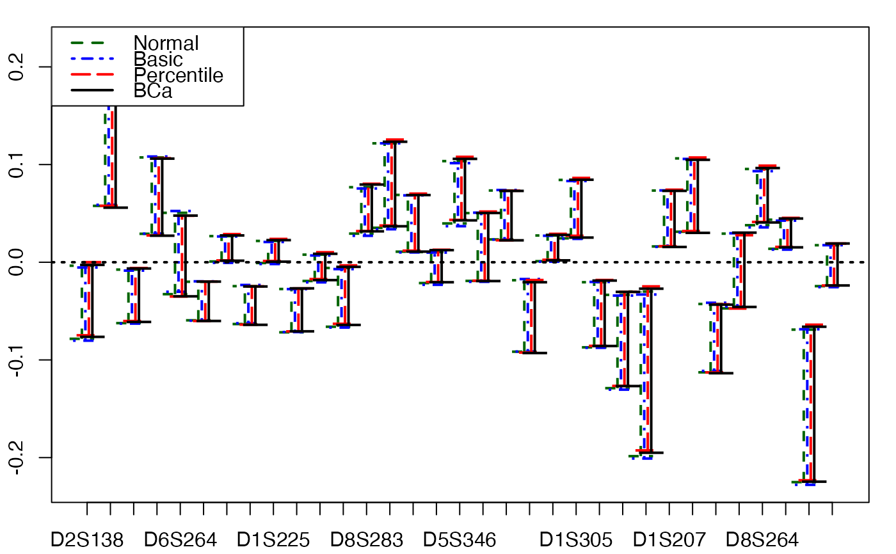plots.confints.bootpls(temp.ci,typeIC="Normal")plots.confints.bootpls(temp.ci,typeIC="BCa",legendpos="bottomleft")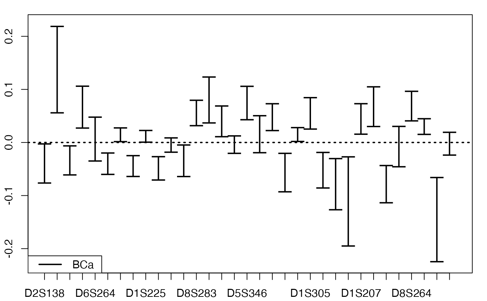plots.confints.bootpls(temp.ci,prednames=FALSE)plots.confints.bootpls(temp.ci,prednames=FALSE,articlestyle=FALSE, main="Bootstrap confidence intervals for the bj")plots.confints.bootpls(temp.ci,indices=1:33,prednames=FALSE)plots.confints.bootpls(temp.ci,c(2,4,6),articlestyle=FALSE, main="Bootstrap confidence intervals for some of the bj")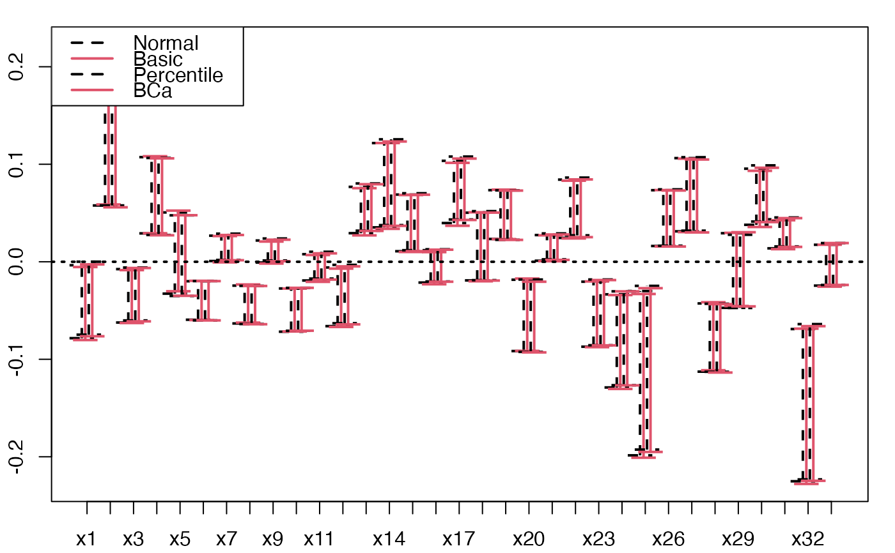temp.ci <- confints.bootpls(aze_compl.bootYT3,1:33,typeBCa=FALSE) plots.confints.bootpls(temp.ci,prednames=FALSE)